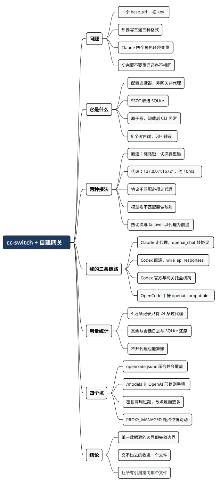

一个网关一把钥匙，三个客户端三种格式：用 cc-switch 收拢 AI 编码配置
Posted on 四 03 9月 2026 in Tech
| Abstract | 一个网关一把钥匙，三个客户端三种格式：用 cc-switch 收拢 AI 编码配置 |
|---|---|
| Authors | Walter Fan |
| Category | learning note |
| Version | v1.0 |
| Updated | 2026-09-03 |
| License | CC-BY-NC-ND 4.0 |
大纲
展开看看
- 一个 401 引出的问题：不是密钥错了，是同一把密钥散在三个地方
- 它是什么：一个配置遥控器，不是网关、不是代理服务、不是模型路由
- 为什么自建用户更需要它：三个客户端三种配置格式，预设列表帮不上你
- 两种接法：直写配置文件，还是走本地代理
- 我的三条链路：Claude 走代理、Codex 直连、OpenCode 手搓
- 用量统计不依赖代理：我库里 4 万条记录，只有 24 条真的过了代理
- 自建才会踩的四个坑：jsonc 覆盖、/models 形状、密钥过期、PROXY_MANAGED
- Cheatsheet：路径、字段、判断树、排错顺序
前几天我在 CC Switch 里配好公司自建的 LLM 网关，起 claude，屏幕上刷出来这么一行：
✻ 401 {"status":"failed","error_message":{"code":401,"message":"Invalid credential"}}
· Retrying in 4s · attempt 4/10
排查完发现是密钥本身失效了——网关那头换过一轮。但让我停下来想了一会儿的不是这个 401，是我意识到：为了修它，我得去三个地方改同一把钥匙。
我的处境很多人都有：手上只有一个 base_url、一把 key，可能是公司的统一网关，也可能是自己用 vLLM 或 one-api 搭的。逻辑上这是一份配置。但落到磁盘上，它是三份：
- Claude Code 读
~/.claude/settings.json，钥匙塞在env.ANTHROPIC_AUTH_TOKEN里； - Codex 读
~/.codex/config.toml，还要配一个~/.codex/auth.json，TOML 和 JSON 各一份； - OpenCode 读
~/.config/opencode/opencode.json，得自己声明一个 provider，指定 npm 适配包，再把模型一个个列出来。
三种文件格式，三套字段名，三种“改完要不要重启”的规矩。这篇讲的就是怎么把这三份收成一份，以及自建场景下会踩到哪些只有自建才会踩的坑。
它是什么
cc-switch 是个跨平台桌面应用，Tauri 2 + Rust 写的，MIT 协议，官网 ccswitch.io。当前 8 个客户端在它管辖范围内：Claude Code、Claude Desktop、Codex、Gemini CLI、Grok Build、OpenCode、OpenClaw、Hermes。
一句话：它是你那几个 AI 编码客户端的配置遥控器。
关键设计是 SSOT（single source of truth，唯一数据源）：所有供应商配置存在 ~/.cc-switch/cc-switch.db 这个 SQLite 里，切换时才把它渲染成各客户端认识的格式，写进那些 live 配置文件。写入走临时文件加 rename 的原子替换，避免写一半断电留个半截 JSON——这点对 settings.json 这种一坏就起不来的文件不是小事。
先说清它不是什么，省得期待错位：
- 不是网关，不聚合、不转发模型，你的模型能力全部来自你配的上游；
- 不是账号池，它不帮你攒额度、不做负载均衡（failover 是有的，但那是“上游挂了换下一个”，不是分流）；
- 不是必需品。它改的都是你本来就能手改的文件。卸载了之后 CLI 照常工作——这是作者明确的“最小侵入”原则，也是我愿意用它的前提。
为什么自建用户更需要它
它的默认受众其实不是我们。翻一眼 README 就知道：赞助商列表长到要折叠，全是各种 API 中转服务，内置 50 多个预设也大半是这些中转商。对那些用户，cc-switch 的价值是“填个 key 就能用”。
自建用户拿不到这个便利——预设列表里没有你的网关。但反过来，配置管理这块的痛苦，自建用户比中转用户更重：中转商通常宣称“兼容 Anthropic 格式”，直接填进 Claude Code 就跑；自建网关的协议、模型名、推理参数都是你自己那一套，每个客户端都要单独适配一遍。
三个客户端要写的东西，摊开是这样：
| Claude Code | Codex | OpenCode | |
|---|---|---|---|
| 配置文件 | ~/.claude/settings.json |
~/.codex/config.toml + auth.json |
~/.config/opencode/opencode.json |
| 格式 | JSON，键都在 env 下 |
TOML + JSON 两份 | JSON，provider 树 |
| 端点字段 | ANTHROPIC_BASE_URL |
[model_providers.x] base_url |
provider.x.options.baseURL |
| 密钥字段 | ANTHROPIC_AUTH_TOKEN |
auth.json 的 OPENAI_API_KEY |
provider.x.options.apiKey |
| 模型怎么定 | 四个角色各一个环境变量 | model + model_catalog_json |
provider.x.models 逐个列，带 context/output 上限 |
| 切完要重启吗 | 不用（支持热切） | 要 | 要 |
最后一行那个差异不是小事。Claude Code 支持热切换，是因为 cc-switch 可以把它的 ANTHROPIC_BASE_URL 指向本地代理，换供应商只是代理换个上游，客户端毫无感知。Codex 和 OpenCode 得重开终端。
模型那一行也值得多说一句。Claude Code 的模型不是一个字段，是四个角色：opus / sonnet / haiku，再加一个 fable。自建网关上通常没有这些名字，所以要做角色映射——把 ANTHROPIC_DEFAULT_OPUS_MODEL 指到你网关上真实存在的模型 ID。手写这四组八个环境变量，抄错一个就是半天排查。
两种接法：直连还是走代理
这是自建用户唯一需要认真做的决定。
直连：cc-switch 把 base_url 和 key 直接写进客户端配置，请求从客户端直达你的网关。链路短，没有额外进程，代价是切换要重启客户端，也没有用量记录。
本地代理：cc-switch 起一个本地 HTTP 服务（默认 127.0.0.1:15721），把客户端的 base_url 改指向它，由它转发到真实上游。多一跳，作者给的数是通常 10ms 以内。
判断很简单——下面任何一条成立，就必须走代理：
- 协议不匹配。你的网关只认 OpenAI Chat Completions，而 Claude Code 说的是 Anthropic Messages。代理负责双向翻译，包括流式 SSE、reasoning 内容和 tool call。Codex 那边对应的开关叫 “Needs Local Routing”，把 Codex 的 Responses 请求转成上游的 Chat Completions。
- 模型名不匹配。Codex 原生只认 GPT 系列名字，你网关上叫
deepseek_v4_flash之类的，需要代理做模型映射，/model命令才列得出来。 - 要注入自定义请求参数。比如给每个请求塞
chat_template_kwargs打开推理——这种上游私有参数只能在代理层加。 - 要热切换，不想每次换供应商都重开终端。
- 要 failover，多个端点熔断切换。这功能以代理为前提。
反过来，如果你的网关原生同时支持 Anthropic Messages 和 OpenAI Responses，模型名也能直接用，那就直连，少一跳少一个故障点。
我验过自己这个网关：/v1/chat/completions 和 /v1/responses 都返 200。所以 Codex 那条链路我用直连，wire_api = "responses"，不需要本地路由。
我的三条链路
脱敏后的真实配置，网关地址统一写成 https://llm-gw.example.com/v1，密钥写成 <YOUR_TOKEN>。
Claude Code：走本地代理，因为要转协议加塞参数。
cc-switch 里这个供应商的 API 格式设为 openai_chat（网关只认 Chat Completions），并带一段请求改写：
{
"body": {
"temperature": 1,
"top_p": 1,
"chat_template_kwargs": {
"enable_thinking": true,
"reasoning_effort": "max"
}
}
}
供应商本体则是那套角色映射：
{
"env": {
"ANTHROPIC_BASE_URL": "https://llm-gw.example.com/v1",
"ANTHROPIC_AUTH_TOKEN": "<YOUR_TOKEN>",
"ANTHROPIC_DEFAULT_OPUS_MODEL": "deepseek_v4_flash[1M]",
"ANTHROPIC_DEFAULT_SONNET_MODEL": "deepseek_v4_flash[1M]",
"ANTHROPIC_DEFAULT_HAIKU_MODEL": "deepseek_v4_flash",
"ANTHROPIC_MODEL": "deepseek_v4_flash",
"CLAUDE_CODE_EFFORT_LEVEL": "max"
}
}
代理接管之后，落到 ~/.claude/settings.json 里的是这样：
{
"env": {
"ANTHROPIC_BASE_URL": "http://127.0.0.1:15721",
"ANTHROPIC_AUTH_TOKEN": "PROXY_MANAGED"
}
}
Codex：直连，保留官方 ChatGPT 登录。
我在 cc-switch 里放了两个 Codex 供应商：一个是官方 OAuth 登录（当前启用），一个是网关。网关那份生成的 config.toml 片段：
model_provider = "custom"
model = "deepseek_v4_flash"
model_reasoning_effort = "high"
disable_response_storage = true
[model_providers.custom]
name = "NewAPI"
base_url = "https://llm-gw.example.com/v1"
wire_api = "responses"
requires_openai_auth = true
托盘菜单里点一下就能在两者之间横跳，重开终端生效。这是我用得最顺手的一个场景——官方额度和网关额度分工，不用记两套配置。
OpenCode：手搓 provider，暂时没交给 cc-switch 管。
{
"$schema": "https://opencode.ai/config.json",
"provider": {
"llm-gateway": {
"name": "llm-gateway",
"npm": "@ai-sdk/openai-compatible",
"options": {
"baseURL": "https://llm-gw.example.com/v1",
"apiKey": "<YOUR_TOKEN>"
},
"models": {
"claude-opus-5": { "name": "claude-opus-5" },
"gpt-5.6-luna": { "name": "gpt-5.6-luna" }
}
}
}
}
那个 npm 字段是 OpenCode 特有的：它用 Vercel AI SDK 的适配包接上游，自建网关基本都是 @ai-sdk/openai-compatible。cc-switch 的 OpenCode 表单里也是选这个（另外还有 @ai-sdk/openai、@ai-sdk/anthropic、@ai-sdk/amazon-bedrock、@ai-sdk/google 可选）。
顺带一个发现：用量统计不依赖代理
我库里现在有 41994 条请求记录。按来源拆开是这样：
| 客户端 | 条数 | 来源 |
|---|---|---|
| Claude | 24 | 真的走了代理 |
| Claude | 1485 | 从 ~/.claude/projects/*.jsonl 会话日志扒的 |
| Codex | 20590 | 从 Codex 会话日志扒的 |
| OpenCode | 19900 | 从 ~/.local/share/opencode/opencode.db 读的 |
只有 24 条真的过了代理——就是那批 401。 其余 4 万条是 cc-switch 自己去翻各客户端的会话记录还原出来的：Claude 读 jsonl，OpenCode 直接查它的 SQLite（session 表拿会话，message 表拿 assistant 消息，解析 data JSON 里的 token 和 cost）。
这个实现细节的意思是：你不开代理，用量统计照样有。 我原以为“看花了多少钱”得付出走代理那一跳，其实不用。如果你只是想知道账，直连加会话日志导入就够了。
顺便说，MCP 那块也是同一个思路：一个面板，每个 server 一行，后面若干个开关分别对应 Claude / Codex / Gemini / Grok Build / OpenCode / Hermes，勾上就同步进对应客户端的配置文件。我现在挂着三个 server，其中一个同时给 Claude 和 Codex 用——以前这是两个文件里各写一遍的事。
自建才会踩的四个坑
前三个我实测过，第四个是读源码发现的。
1. opencode.jsonc 会盖掉 cc-switch 的写入。
cc-switch 写的是 ~/.config/opencode/opencode.json（源码里写死的：get_opencode_dir().join("opencode.json")）。而 OpenCode 加载全局配置时，按顺序读 config.json → opencode.json → opencode.jsonc，逐层深合并，后面的覆盖前面冲突的键。
我本机就有一个 opencode.jsonc。所以如果我在 cc-switch 里加一个 OpenCode 供应商、provider 的键名又和 jsonc 里的撞上，cc-switch 写的会被我自己那份 jsonc 悄悄盖掉，界面上却显示切换成功。 我目前还没真踩到，因为 cc-switch 里我一个 OpenCode 供应商都没建（数据库里是 0 条）——但这个坑埋在那儿。
要交给 cc-switch 管 OpenCode，先把 opencode.jsonc 里的 provider 段挪走或改名，只留一处。这是深合并而不是整文件替换，所以 skills、agent 这些不冲突的键留在 jsonc 里没问题。
2. “自动获取模型”那个按钮对自建网关大概用不上。
cc-switch 有个贴心功能：填好 key 和端点，点一下就去调 /v1/models 把模型列表拉回来，省得手抄模型 ID。
我这个网关的 /v1/models 返 200，233 个模型，但形状是这样：
[
{ "model": "zoom_content_moderation", "vendor": "zoom", "routes": [] },
{ "model": "baai_bge_m3", "vendor": "baai", "routes": [] }
]
裸数组，字段叫 model。OpenAI 的规范形状是 {"data": [{"id": "..."}]}。cc-switch 文档明确说它按 OpenAI 兼容格式解析，解析不了会报 parse failure——所以这个按钮对它无效，模型得手填。
不算 cc-switch 的问题，但值得提前知道：自建网关的 /v1/models 只要没严格照 OpenAI 抄，这个便利就没了。 顺手可以自己验一下：
curl -s "$BASE/models" -H "Authorization: Bearer $KEY" \
| python3 -c 'import json,sys; d=json.load(sys.stdin); print(type(d).__name__, isinstance(d,dict) and "data" in d)'
出来 dict True 就能用，list False 就手填。
3. 收拢配置之后，密钥轮换要改的地方反而变多了。
我这把网关密钥是 CSMS 签发的 JWT，iat 到 exp 正好 14 天。也就是说每两周这个 401 会准时回来一次。
而我现在有三处存着它：cc-switch 的 SQLite、opencode.jsonc、以及导出 LLM_API_KEY 的那份 shell 配置。这就是单一数据源的反讽——你以为收成一处了，实际上只收了它管得着的那部分。 cc-switch 管三个客户端的配置文件，但管不到你的环境变量，也管不到你没交给它的那个 OpenCode。
我的解法是让能引用文件的都去引用同一个文件。OpenCode 原生支持变量替换：
{
"provider": {
"llm-gateway": {
"options": { "apiKey": "{file:~/.secrets/llm-gw-token}" }
}
}
}
{env:VAR} 也支持。这样轮换时只改 ~/.secrets/llm-gw-token 一个文件，OpenCode 那份就跟着走了，剩下 cc-switch 里改一次。
4. settings.json 里那个 PROXY_MANAGED 是正常的，不要手动改。
开了代理接管之后，~/.claude/settings.json 里的 ANTHROPIC_AUTH_TOKEN 会变成字面量 PROXY_MANAGED——真钥匙留在 cc-switch 的库里，由代理在转发时注入。第一次看见容易以为配置写坏了，跑去手填真 key，反而制造混乱。
同理，cc-switch.db 不要手改。应用对它持有 mutex，你改的东西要么被覆盖，要么撞上并发写。要改就在界面上改，或者用它的导入导出。
另外还有个方向的坑：你手改了客户端配置文件，cc-switch 不会自动知道。 它的机制是“编辑当前供应商时回填”（backfill）——你得去界面上打开那个正在生效的供应商，它才把你手改的内容读回来，然后你保存进库。顺序反了就会丢改动。
Cheatsheet
装
# macOS
brew install --cask cc-switch
brew upgrade --cask cc-switch
# Arch
paru -S cc-switch-bin
Windows 用 .msi 或免安装 zip；Linux 有 deb / rpm / AppImage。macOS 版本有 Apple 签名和公证，直接开就行。
它的数据在哪
~/.cc-switch/
├── cc-switch.db # SQLite，唯一数据源（供应商 / MCP / prompts / skills）
├── settings.json # 设备级偏好，不跨机同步
├── backups/ # 自动备份，保留最近 10 份
└── skills/ # skill 本体，默认软链到各客户端
客户端配置文件对照
| 客户端 | 路径 | 格式 |
|---|---|---|
| Claude Code | ~/.claude/settings.json |
JSON，env 下 |
| Claude MCP | ~/.claude.json |
JSON，mcpServers |
| Codex | ~/.codex/config.toml + auth.json |
TOML + JSON |
| Gemini CLI | ~/.gemini/.env + settings.json |
dotenv + JSON |
| OpenCode | ~/.config/opencode/opencode.json |
JSON，provider 树 |
| OpenCode 用量库 | ~/.local/share/opencode/opencode.db |
SQLite |
自建接入判断树
你的网关原生支持客户端的协议吗？
├─ 是 ──> 模型名能直接用吗？
│ ├─ 能 ──> 直连。少一跳。
│ └─ 不能 ──> 走代理，配模型映射
└─ 否 ──> 走代理
├─ Claude：供应商 API 格式选 openai_chat / openai_responses
└─ Codex：打开 Needs Local Routing + 填模型映射表
另外这三条任意一条成立，也走代理：
要热切换 / 要 failover / 要注入上游私有请求参数
排错顺序（我那个 401 就是照这个顺序定位的）
- 代理在听吗：
lsof -nP -iTCP:15721 -sTCP:LISTEN -
钥匙本身有效吗——绕过所有客户端，直接打网关：
bash curl -s -o /dev/null -w '%{http_code}\n' "$BASE/chat/completions" \ -H "Content-Type: application/json" \ -H "Authorization: Bearer $KEY" \ -d '{"model":"YOUR_MODEL","max_tokens":5,"messages":[{"role":"user","content":"hi"}]}'401 就是密钥问题，跟 cc-switch 无关，别在界面上瞎点。 3. JWT 过期了吗：
bash python3 -c " import base64,json,datetime,os d=json.loads(base64.urlsafe_b64decode(os.environ['KEY'].split('.')[1]+'==')) print(datetime.datetime.fromtimestamp(d['exp']))"4. 切了没生效：除 Claude Code 外都要重开终端。Claude Code 不生效就看代理是不是没起。 5. 改完消失了：先在界面上打开当前供应商触发回填，再保存。
别做的事
- 别手改
~/.cc-switch/cc-switch.db - 别把
settings.json里的PROXY_MANAGED换成真 key - 别同时留着
opencode.json和opencode.jsonc里冲突的provider段 - 别指望它管你的环境变量
总结：收拢配置是对的，但要知道它收不到哪儿
cc-switch 值得装。三个客户端三种格式这件事，本来就不该由人的记性来兜。托盘点一下切供应商、MCP 一处配置多端同步、不开代理也能算账——这些是实打实省下来的时间。对自建和公司网关用户，它省的比中转用户更多，因为我们本来要抄的东西更多。
但那个 401 教我的是另一件事：单一数据源的边界，就是它的失效边界。 cc-switch 是三个客户端的唯一数据源，不是我整个环境的唯一数据源。环境变量在它外面，我手搓的那份 opencode.jsonc 在它外面，两周一换的密钥在它外面。收到一处的东西，也会一处坏掉给你看。
所以我现在的做法是：能交给它管的全交给它，交不出去的收进一个文件，然后让所有引用都指向那个文件。 遥控器管设备，钥匙串管钥匙，别指望一个东西干两件事。
下次配环境的时候，不妨先花两分钟画一下：我这把钥匙，到底存在几个地方？
全文思维导图
@startmindmap
<style>
mindmapDiagram {
node {
BackgroundColor #F8F9FA
RoundCorner 10
Padding 10
FontSize 13
}
:depth(0) {
BackgroundColor #1E3A5F
FontColor white
FontSize 18
FontStyle bold
}
:depth(1) {
FontSize 15
FontStyle bold
}
:depth(2) {
FontSize 13
}
}
</style>
* cc-switch + 自建网关
** 问题
*** 一个 base_url 一把 key
*** 却要写三遍三种格式
*** Claude 四个角色环境变量
*** 切完要不要重启还各不相同
** 它是什么
*** 配置遥控器，非网关非代理
*** SSOT 收进 SQLite
*** 原子写，卸载后 CLI 照常
*** 8 个客户端，50+ 预设
** 两种接法
*** 直连：链路短，切换要重启
*** 代理：127.0.0.1:15721，约 10ms
*** 协议不匹配必须走代理
*** 模型名不匹配要做映射
*** 热切换与 failover 以代理为前提
** 我的三条链路
*** Claude 走代理，openai_chat 转协议
*** Codex 直连，wire_api responses
*** Codex 官方与网关托盘横跳
*** OpenCode 手搓 openai-compatible
** 用量统计
*** 4 万条记录只有 24 条过代理
*** 其余从会话日志与 SQLite 还原
*** 不开代理也能算账
** 四个坑
*** opencode.jsonc 深合并会覆盖
*** /models 非 OpenAI 形状则手填
*** 密钥两周过期，改点反而变多
*** PROXY_MANAGED 是占位符别动
** 结论
*** 单一数据源的边界即失效边界
*** 交不出去的收进一个文件
*** 让所有引用指向那个文件
@endmindmap

本作品采用知识共享署名-非商业性使用-禁止演绎 4.0 国际许可协议进行许可。 欢迎在我的个人网站 https://www.fanyamin.com 访问原文并评论。